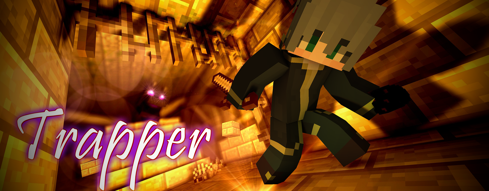
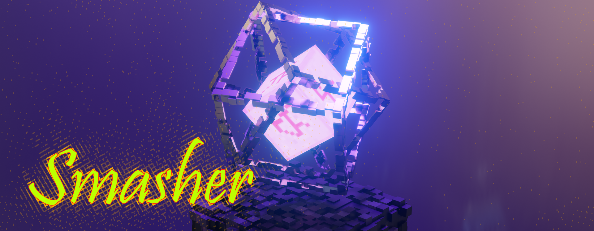
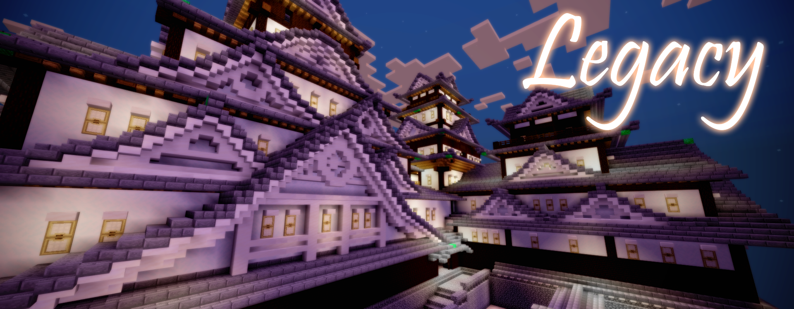

PHASE-02
PHASE-02には「新ウェポン」「新サプライ」「新アリーナ」が追加されます。
さらに、各種ウェポンの調整が入ります。
HELLO NEWCOMER
トラッパー ❝Trapper❞

エンダードラゴンを現世に呼び起こした罠の使い手がBowyersMCへ参戦します。
任意の座標に罠を仕掛ける能力を持つトラッパーは、座標転換を行うウェポンのアンチピックになるでしょう。
現在実装されているウェポンとは格段に性能が異なり、設置するごとに罠は無限に増加していく唯一無二の量産型ウェポンです。
長期戦に持ち込めば持ち込むほど有利になるという一遍変わった性能を持ちます。
更に詳しい情報はウェポン紹介ページより。
HELLO NEW SUPPLY
スマッシャー ❝Smasher❞

エンダードラゴンを呼び起こした産物に該当する破壊の能力を持つサプライウェポン。
奈落死が存在するこのゲームにアリーナを破壊する新たな脅威が現れます。
広範囲のエリアが爆破されるため意図的に奈落を生み出すことにも使え、延長戦アリーナの外枠をも消し去れる。
更に詳しい情報はウェポン紹介ページより。
HELLO NEW ARENA
和風世界 ❝Legacy❞

このアリーナは古典的な城をモチーフにしたアリーナになっています。
内部には基本的に入ることができませんが、スマッシャーで意図的に入ることはできます。
高低差がとても激しいことで、移動系ウェポンが一方的に有利にならないようにトランポリンが多く配置されています。
決着がつかないかくれんぼ状態になる可能性が極めて高いことを考慮し、延長戦では墓場に移動します。
HELLO NEW SYSTEM
オシゴト ❝Oshigoto❞

ひとりでカルマを稼ぐことができ、弓の射撃精度向上にもつながるシステムを導入しました。
際どい動きの偽物をボコボコにしよう。
更に詳しい情報はオシゴト概要ページより。
WEAPON ADJUSTMENTS
PHASE-01での弓師の意見を大いに受け入れ、すべてのウェポンは軒並みバランスが取れるように調整されます。
 エアライド ❝Airride❞
エアライド ❝Airride❞
・横方向と縦方向の羽ばたきによる飛距離を減少
 リーパー ❝Leaper❞
リーパー ❝Leaper❞
・手に持っているときにトランポリンでの跳躍距離を大幅に強化する能力の追加
・手に持っているときに使ったトランポリンが、3秒間スライムブロックに変化する能力の追加
 ヘイズ ❝Haze❞
ヘイズ ❝Haze❞
・移動系ウェポンを発動中の敵がヘイズに当たると、効果発動を全て無効化する能力を追加 (修正)
 ドーピング ❝Doping❞
ドーピング ❝Doping❞
・手に持っているときにムーブメントブロックの効果を強化する能力の追加
 パラレル ❝Parallel❞
パラレル ❝Parallel❞
・転換時に1.5秒間透明になれる仕様を削除
・奈落の上で使用をした際、次のテレポート先を履歴からランダムの設置先になるように変更
 シールド ❝Shield❞
シールド ❝Shield❞
・キルで獲得できる鎧の数を2つまでに変更
 グラビティ ❝Gravity❞
グラビティ ❝Gravity❞
・移動系ウェポンのトリガーによる効果発動を全て無効化する能力を追加
 ニンジャ ❝Ninja❞
ニンジャ ❝Ninja❞
・側面だけでなく天井を壁対象に追加し、天井張り付き移動を追加
・左クリックで発動可能な三段ジャンプ能力の追加
SYSTEM ADJUSTMENTS
・サプライプールの選定仕様を変更
・商売人の当たり判定がおかしい問題を修正
・ゲーム内チャットの追加 (文頭に*を付けると全体チャットに)
・ヘイズ状態によるCT加算機能の追加、修正
・ヘイズ状態のウェポン使用不可秒数をCTとして可視化するように変更
・転移系ウェポンをゲーム時間残り1秒で使用不可にするように変更
・ゲーム中のPing表示機能を追加
・ボスバーとステータスが重なっていたのを見やすく修正 (クラシックUI限定)